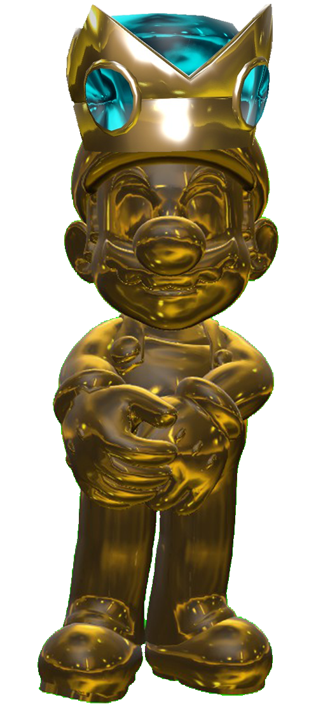
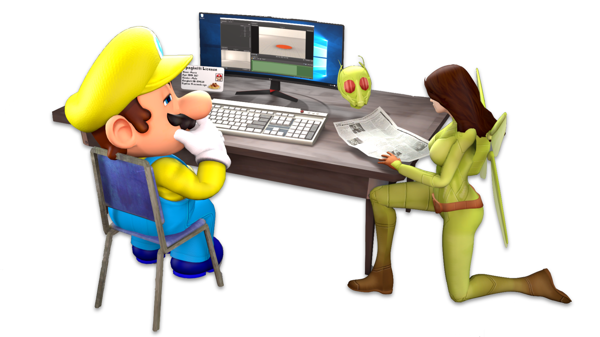

OnyxKing 10 year anniversary - Special Announcement 01
30th January 2024 - Generalisk
Hello chat, Generalisk here!
On this day, 10 years ago, OnyxKing released his first ever video to YouTube. Now this is A huge milestone for us, so to celebrate, we have 10 special announcements lined up for you, each will be announced at the end of each month:
January 30th
February 27th
March 26th
April 30th
May 28th
June 25th
July 30th
August 27th
September 24th
October 29th
For todays announcement, we gave Hugh A bit of A model upgrade, That's it.
Anyways, thats all I got for now, peace out!
OnyxKing Season 10 is here!
26th January 2024 - OnyxKing67

Hey guys, just wanted to announce that OnyxKing Season 10 is officially here! Can you believe it's been 10 seasons already? (we certainly can't).
To celebrate OnyxKing's 10 year anniversary, we have a lot cooking for you lot this year. We also have bunch of special announcements for you in the coming months, so stay tuned.
⠀
A slight change of plans
20th January 2024 - OnyxKing67
Hey guys,
Just wanted to take the moment to quickly announce a slight change to our upload schedule. Instead of uploading on Saturdays at 11AM EST, we're gonna switch to Fridays at 3PM EST.
Kay, thanks!
A hard knock (Onyx) Life!
11th November 2023 - OnyxKing67
Introducing our Second Channel (and no the OST channel doesn't count), OnyxLife!
This is where we plan to upload non-SM64 style content and perhaps some behind the scenes docs in the future.
OnyxKing👏 2023👏 Review👏
11th November 2023 - OnyxKing67
2023 was probably one of OnyxKing's greatest year to date! And I assure you 2024 is gonna be 10x better! But let's look back on this year, and decide whats or whos the best of the bunch.
Introducing the OnyxAwards!
Think of it as The Game Awards: OnyxKing Edition. There are 10 different categories:
1) Best Character
2) Best OC
3) Best Villain
4) Character you want to return the most
5) Best Fanart
6) Best Animating
7) Best Voice Acting
8) Best Writing
9) Best Short Form Video
10) Best Long Form Video
We will let YOU vote on whos the best of each category. Nominations will close on December 11th and the final vote will soon follow, with that closing on December 25th.
Wish everyone the best of luck!

It's back!
11th November 2023 - OnyxKing67


Yep, it's that time of year again. And Collabaganda is back. So time for Collabaganda 2023!
Submissions will be open until December 11th.
Rules:
1. Must be between 10-30 Seconds Long.
2. Must be an Animation
3. Must contain at least one OnyxKing Character.
4. Put your Name or Logo in the bottom-right Corner.
5. One Entry per Person.
Good luck and have fun! :)
or email your submission to OnyxKingCollabaganda@gmail.com
A OnyxKing Website Overhaul
14th October 2023 - Generalisk
Hello chat, Generalisk here!
Back in July of this year, I made the official OnyxKing website using my crappy HTML skills and GitHub. Fast forward to now, I'm STILL using GitHub but my HTML skills are not as crappy now. So now, I feel like it's time I gave the website A visual upgrade. I have went and remade the page template from the ground up & rewrote all the pages with this new template, while making adjustments to each and every page.
One the main major changes to the site is the addition of A search page. Which means I had to go and add A whole lot of new pages, otherwise the search results would be really small.
Speaking of new pages, we added new character pages & expanded out existing character pages. The goal here was to make those pages feel like A wiki.
Which reminds me, you may have noticed that the "About Us" page is gone, that is because we removed it as most of it's contents have been merged with the Home page.
I'm also very paranoid rn about forgetting something when remastering the the website so if you see something unfinished or a bug or a invalid link, please let me know.
and thats all, peace out.
-Generalisk
Zelus' theme, Evil Beneath the Surface, is NOW PUBLICLY AVAILABLE on YouTube
30th August 2023 - OnyxKing67

In 2020, we comissioned Callum Stamp, AKA Blocked Content, to make Zelus' theme. In which he made "Evil Beneath the Surface". This theme was used recurringly throughout the Revenge of Zelus arc until the end of the arc where she, of course, died. With her dead, there was no longer a reason for us to keep using her theme so we therefore stopped using it in our videos.
(Although I think we did post the song on patreon back in 2021-ish.)
Fast forward to 2023 and shes STILL DEAD (not big soup rice). But in May, we decided to create a new channel dedicated to the custom music we make for our videos. (I don't know why we didn't do this sooner)
So once we set the channel up, we immediately wanted to start posting songs onto the channel so the logical thing to do was to pick the oldest, that being this one.
We started setting it up back in June/July but due to Hugh's debut being right around the corner, we got too busy to finish setting it up. But now that Hugh has made it's debut, we now had the time to finish setting it up (mainly the album cover since that was the only thing that wasn't done at that point).
So here we are, now making Zelus' theme officially available to the public. You can now watch it on YouTube or here on the website.
We plan to upload more music in the future. (and maybe some covers?)
I wanna try something different this year...
20th July 2023 - OnyxKing67

Since 2020, we've been holding A annual event at the end of the year called Collabaganda, and it has been A success. This year, we wanted to add A mid-year Collabaganda but with A twist. This is Collabaganda Shorts, the same old Collabaganda but instead your submission must be A in the style of A YT Short/TikTok. How it works is simple, fans get to submit fan-made OnyxKing-themed videos but in the style of A YouTube short/TikTok & get it to appear on the channel.
The possibilities you can do is almost endless. You can re-animate A Gianni Matragrano or A Luke Correia short with the OnyxGang, or you favourite moment from you favourite game/show, or maybe something Original (e.g Your OC VS EM64).
Rules
1. Must be between 2 - 15 Seconds Long
2. Must be an Animation.
3. Must contain at least one OnyxKing Character.
4. One Entry per Person
5. This must be your work
6. Video must be Portrait with A 9:16 ratio, 720x1280 minimum.
7. You may feature your own OC's.
Submissions close on the 21st of August 2023
You hit the bottom of the blog page
looks like Grasshopper & OnyxKing have set up camp here!